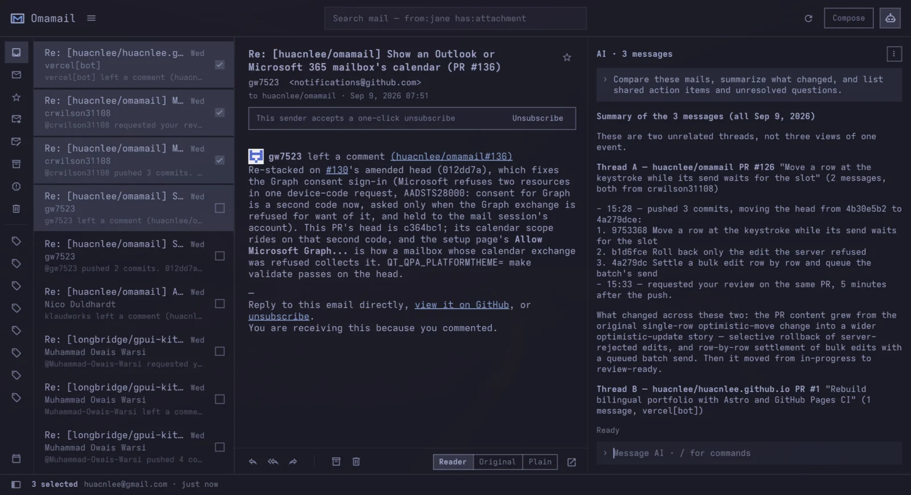

01 What it looks like
Three columns when there is room, one when there is not — a real Hyprland window, tiled like any other.
FULL WINDOW



MINI SIZE


BAR PREVIEW

02 Mailboxes it can open
Four kinds of mailbox, one window. What a mailbox cannot do, the panel does not offer.
 Gmail
Gmail
SIGN IN WITH GOOGLE
Labels, conversations, Gmail's own search syntax, and a report-spam that Google actually learns from.
Outlook
SIGN IN WITH MICROSOFTOutlook.com, Hotmail, Live and MSN over OAuth — Omamail never sees the account password.
 HEY
HEY
THROUGH THE HEY CLI
No address and no password — the HEY CLI 37signals publish holds the token.
IMAP
AN ADDRESS AND AN APP PASSWORDFastmail, iCloud, Yahoo, Zoho, GMX, Proton through its Bridge, or a server of your own.
03 What it does
Designed to sit inside Omarchy, not to look like a web app in a window.
- 01Monospace, square, denseNothing on screen that is not your mail.
- 02Keyboard-firstMove, archive, star, reply, compose, switch mailbox, switch account, search.
- 03Always countingThe unread badge keeps working while the window is shut, for every account, with a notification when new mail lands.
- 04One windowRead, archive, star, trash, search and answer without a second window taking a region of its own.
- 05Invitations you can answerRead out of the message's own calendar part and drawn as a meeting, in your clock rather than the organiser's. Yes, Maybe and No answer the organiser. Gmail and IMAP alike; not HEY.
- 06Off a list in one clickA newsletter that supports one-click unsubscribing is unsubscribed from without leaving the window. Nothing is ever fetched from a sender's address until you ask.
- 07Images stay blockedLoading a sender's pictures tells them the mail was read, from which address and when. They load when you ask, for that one message.
- 08Your themeEvery colour comes from the active Omarchy theme, so the mailbox changes the moment the desktop does.
- 09Keyring-backedGmail and Outlook refresh tokens and every IMAP password live in GNOME Keyring — never in a config file, never on a command line.
- 10Several mailboxesEach with its own inbox, cache and unread count. List, labels and profile are cached per account, so switching never waits on the network.
- 11mailto: linksOnce the plugin is enabled, clicking an address anywhere on the desktop opens compose here.
- 12Undo sendOutgoing mail is delayed by ten seconds so you can cancel it. Set it to 0 to send immediately.
04 Keys
The keyboard belongs to the application, and the context says what a key means where. Every binding lives in one table; the shortcut sheet and the status-bar hints render from it.
| Key | What it does |
|---|---|
| j/k | Move down / up |
| Returnoro | Open the selected message |
| Escape | Back to the list; close the window from the list |
| e | Archive |
| d | Move to trash |
| s | Star or unstar |
| Shift + I/Shift + U | Mark read / unread |
| r/a/f | Reply, reply all, forward |
| c | Compose |
| Ctrl + Return | Send |
| / | Search |
| Alt + 1 … Alt + 0 | The mailbox with that number on the rail — hold Alt and the rail says which is which |
| Alt + A | Switch account |
| Ctrl + =/Ctrl + -/Ctrl + 0 | Zoom the message body, or reset it |
| F5/Ctrl + R | Check for mail |
| ? | Every shortcut |
05 What it does not do
No embedded browser. A message opens in a reading view Omamail builds itself: headings, paragraphs, lists and links in your own type at a readable measure, with none of the sender's presentation in it. The sender's own layout is one click away, and that one renders through Qt's own rich text engine. A browser engine cannot be embedded in a plugin at all: QtWebEngineQuick::initialize() has to run before the host process builds its QGuiApplication, and a plugin loads long after that.
No attachment downloads. Not yet.
It will not knock on your own network's door. Images pointed at this machine or at the network around it — loopback, private addresses, .local names, file: — are never fetched at all, however often you ask.
06 Install and remove
INSTALL
$ omarchy plugin add https://github.com/huacnlee/omamail.git --enable
Then click the envelope in the bar. To open it from the keyboard, add this to ~/.config/hypr/bindings.lua:
o.bind("SUPER + SHIFT + G", "Omamail",
"omarchy shell shell toggle omamail '{}'")
The target is shell, not the plugin id: the window is summoned by the shell, which is what loads it in the first place.
Requires Omarchy 4, plus socat, secret-tool, openssl, xdg-open and curl — all of which Omarchy already ships. A HEY mailbox additionally needs hey.
REMOVE
$ omarchy plugin remove omamail
That takes the plugin itself. Nothing it wrote lives inside your Omarchy config, so removing those is separate and entirely up to you:
$ secret-tool clear service omamail # credentials $ hey auth logout # HEY session $ rm -rf ~/.config/omamail # accounts $ rm -rf ~/.cache/omamail # cached mail
Signing out from inside the app clears the keyring entry on its own. The plugin never edits your shell, Hyprland or theme configuration.